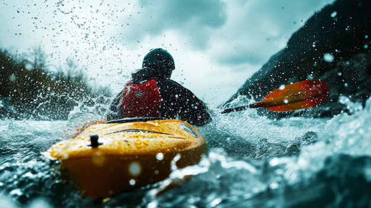

- Trekking
- Description:Rainy season trekking can be a refreshing experience with lush green landscapes and waterfalls. Trails can be more challenging due to slippery paths and streams, so proper gear is essential.
- Popular Spots: Western Ghats, Himalayan foothills.
- Gear Needed: Waterproof boots, rain jacket, trekking poles.
- Rafting
- Description:River rafting in the monsoon can be thrilling due to higher water levels and stronger currents. It’s an exhilarating sport for those seeking an adrenaline rush.
- Popular Spots:Rishikesh, Manali, Coorg.
- Gear Needed: Life jacket, helmet, waterproof clothing.
- Kayaking

- Description:Kayaking in the rain can offer a unique perspective of nature. Rivers and lakes may be more dynamic during the rainy season.
- Popular Spots:Kerala backwaters, Goa.
- Gear Needed: Kayak, paddle, life jacket, waterproof gear.
- Mountain Biking

- Description:Mountain biking on wet trails can be exciting but requires skill and caution. Muddy paths provide a different challenge and enhance the adventure.
- Popular Spots:Munnar, Nandi Hills, Lonavala.
- Gear Needed: Mountain bike, helmet, waterproof clothing.
- Camping
- Description:Camping in the rain can be a peaceful experience with the soothing sounds of raindrops. Choose campsites with good drainage to avoid waterlogging.
- Popular Spots:Forests, hill stations, riversides.
- Gear Needed: Waterproof tent, rainfly, sleeping bag.
- Canyoning

- Description:This involves descending canyons using various techniques such as rappelling and sliding down waterfalls. The rainy season adds excitement with increased water flow.
- Popular Spots:Cherrapunji, Coorg.
- Gear Needed: Wetsuit, harness, helmet.
- Waterfall Rappelling
- Description:Rappelling down waterfalls can be a thrilling experience. The increased water flow during the rainy season can make this activity more dramatic.
- Popular Spots:Pune, Matheran.
- Gear Needed: Harness, ropes, helmet.
- Fishing

- Description:Fishing in rivers or lakes during the rainy season can be productive as fish tend to be more active. The rain can create a serene atmosphere for the sport.
- Popular Spots:Reservoirs, riverbanks.
- Gear Needed: Fishing rod, bait, waterproof gear.
- Safety Tips
- Check Weather Conditions:Ensure that the weather is suitable for the activity and avoid severe storms.
- Wear Appropriate Gear: Invest in waterproof and durable gear to stay dry and safe.
- Follow Local Guidelines: Adhere to safety guidelines provided by local adventure sports organizations.
- Stay Hydrated and Energized: Carry enough water and snacks for the activity.